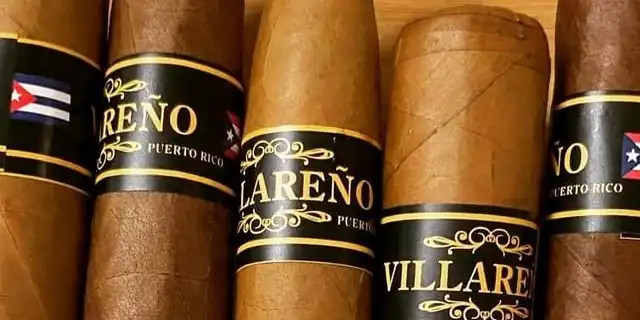

Villareño (surtido)
By Villareño Cigars (Delvis) · Santa Isabel, Puerto Rico
An assortment sold by Puerto Rico Cigar Enthusiasts; the online shop that listed it no longer opens. From a search result; not verified at the source.
- Vitolas: Robusto 5 x 52, Toro 5 x 54, Toro 5 x 56, Torpedo, Perfecto, Nub
Sources: 1
See Villareño (surtido) in the app, rate it and save it to Mi Hoja.